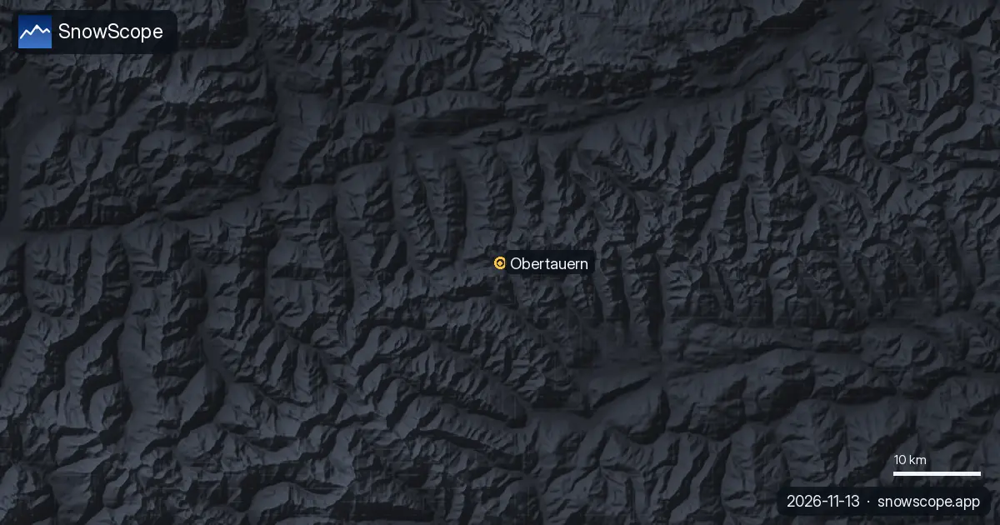
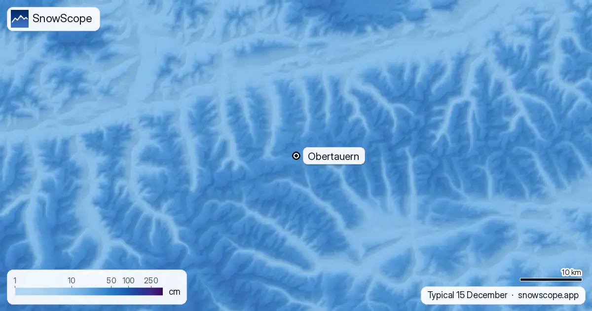

Obertauern a dicembre: neve fuori dall'hotel, settimana più economica
L'impianto più basso di Obertauern parte a 1628 m, quindi tutto il paese sta dove a dicembre di solito la neve resta. Nei nostri 46 inverni di storico, a metà montagna c'erano 30 cm o più nella settimana dal 15 al 21 dicembre nell'80 % degli inverni, e lo skipass di 6 giorni costa 331 EUR fino al 25 dicembre invece di 368 EUR.
Le previsioni neve in tempo reale per Obertauern nell'app SnowScopeAltezza neve, allerte powder e mappa 3D, gratis.Il verdetto in breve
Per una settimana economica in Austria a dicembre senza pagare un ghiacciaio, Obertauern è la prima scelta. Il comprensorio va da 1628 m a 2297 m, con 87 km di piste mappate e 28 impianti, e nessuna pista di fondovalle che dipende dalla fortuna.
Il limite è semplice: inizio dicembre non è ancora sicuro. Nella prima settimana del mese solo poco più della metà dei nostri inverni (57 %) aveva 30 cm a metà montagna. Prenotate la seconda metà del mese e le probabilità migliorano molto.


Dicembre, settimana per settimana
A metà montagna (1962 m) la quota di inverni con almeno 30 cm sale durante il mese: 57 % dall'1 al 7 dicembre, 65 % dall'8 al 14, 80 % dal 15 al 21 e 85 % nella settimana di Natale. In vetta (2297 m) le stesse settimane danno 76, 80, 85 e 91 %.
L'altezza tipica a metà montagna cresce da 34 cm l'1 dicembre a 43 cm il 15 e 62 cm il 31. In un anno magro (1 inverno su 10) il 15 dicembre ha solo 17 cm; in uno ricco, 86 cm. In nessuno dei nostri 46 inverni il paese era senza neve il 15 dicembre.
Un avvertimento sul lungo periodo: la media di dicembre a metà montagna è scesa da 46 cm nei primi 15 inverni a 38 cm negli ultimi 15, e l'inverno scorso il 15 dicembre c'erano solo 18 cm.
Quanto costa lo skipass
Il listino ufficiale 2026-27 di Obertauern ha due stagioni. Il giornaliero costa 72 EUR in entrambe. Il risparmio è sui plurigiornalieri: 6 giorni costano 331 EUR in stagione B, dal 20 novembre al 25 dicembre, contro 368 EUR in alta stagione.
Una settimana che finisce prima di Natale paga lo skipass al prezzo più basso della stagione B, con gli stessi impianti e, nella maggior parte degli inverni, neve sufficiente.
Rispetto al Kitzsteinhorn
Il Kitzsteinhorn sopra Kaprun è la risposta classica per dicembre: un ghiacciaio con 137 cm in vetta in un tipico 15 dicembre. Ma il suo impianto più basso è a 765 m, dove un tipico 15 dicembre ha 6 cm, e la metà montagna (1894 m) è simile a Obertauern: 40 cm e 76 % degli inverni con 30 cm nella settimana dal 15 al 21 dicembre.
Sul prezzo non c'è partita: 6 giorni al Kitzsteinhorn costano 396 EUR a inizio stagione e 440 EUR in alta stagione. La settimana prima di Natale a Obertauern costa meno, e si parte con gli sci dall'hotel.
Per chi è adatta
Famiglie e sciatori intermedi che vogliono sciare sotto casa a dicembre spendendo meno. Chi cerca neve profonda aspetti la settimana di Natale, quando il 41 % dei nostri inverni aveva 60 cm o più a metà montagna, oppure salga più in alto.
Consigli per sciatori
- Scegliete dal 15 al 21 dicembre o dopo: la probabilità di 30 cm a metà montagna sale dal 57 % all'80 % rispetto alla prima settimana.
- Fate finire lo skipass di 6 giorni entro il 25 dicembre per restare nella stagione B (331 EUR invece di 368 EUR).
- Guardate la mappa della neve una settimana prima di partire: l'inverno scorso dimostra che un dicembre magro capita ancora.
- Fuoripista dopo una nevicata: leggete ogni mattina il bollettino valanghe del Salisburghese.
Altre mappe (siti esterni)
Riferimenti e crediti
- Obertauern: official lift-pass prices (2026-27), checked 13 November 2026 www.ski-obertauern.at/en/ski-pass/ski-pass-prices
- Kitzsteinhorn (Kaprun): official lift-pass prices (2026-27), checked 13 November 2026 www.kitzsteinhorn.at/en/tickets-prices/ski-board
Su questi numeri
Numeri della neve: storico neve SnowScope, 46 inverni passati (1980-81 - 2025-26) alle quote della località, corretto per la quota (una stima per un'area, non i bollettini della località); "buona neve" = 30 cm o più al suolo in media nella settimana. Mappa: la nostra altezza abituale al 15 dicembre distribuita sul terreno secondo la quota. Piste e impianti: mappatura OpenSkiMap. Skipass: listini ufficiali delle località, verificati il 13 novembre 2026; i prezzi possono cambiare.
Bollettini valanghe ufficiali: Lawinenwarndienst Salzburg
Cita questo articolo
Per ricerca, didattica o stampa: numeri e grafici sono liberamente riutilizzabili con licenza CC BY 4.0 citando così.
SnowScope (2026), Obertauern a dicembre: neve fuori dall'hotel, settimana più economica, https://snowscope.app/blog/it/2026/11/obertauern-december-skiing-cheap-snow-sure-pre-christmas.html, consultato il 2026-11-14
SnowScope (Atlas Labs). (2026, November 14). Obertauern a dicembre: neve fuori dall'hotel, settimana più economica. SnowScope snow reports. https://snowscope.app/blog/it/2026/11/obertauern-december-skiing-cheap-snow-sure-pre-christmas.html
BibTeX
@misc{snowscope2026obertauerndecemberskiing,
author = {{SnowScope (Atlas Labs)}},
title = {Obertauern a dicembre: neve fuori dall'hotel, settimana più economica},
year = {2026},
month = nov,
howpublished = {\url{https://snowscope.app/blog/it/2026/11/obertauern-december-skiing-cheap-snow-sure-pre-christmas.html}},
note = {Published 2026-11-14 13:29 UTC; accessed 2026-11-14}
}· CC BY 4.0 · Metodi, dati e strumenti →
Obertauern: neve e temperatura per quota, quest'inverno vs lo scorso (strumenti) →
Segui Obertauern
Gratis: un messaggio quando arriva la neve e il meteo ogni mattina.
Altri bollettini neve

Ecco le nuove mappe delle prossime due settimane sulle Alpi, dal 13 novembre al 26 novembre: la neve fresca attesa sul terreno, letta da i due …

Austria prima di Natale: Galtür 258 EUR e Kühtai 269 EUR per 6 giorni, con 30 cm in oltre il 90 % degli inverni; i ghiacciai costano di più, le piccole stazioni sono un azzardo.